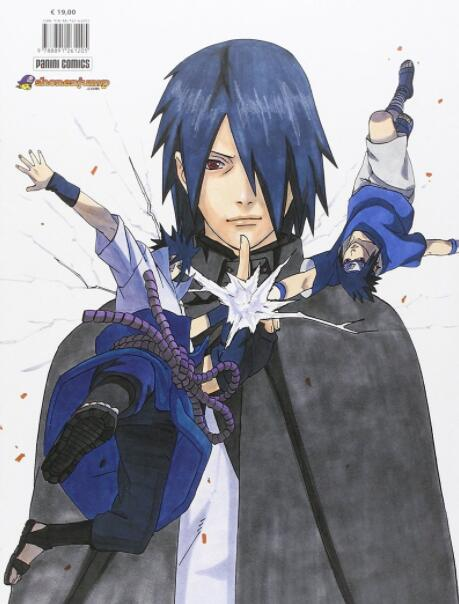

受欢迎程度：二柱子cp

|
漩涡鸣人 |
| 受欢迎程度：动漫主角 | |
| 资料简介：鸣人日本漫画家岸本齐史作品《火影忍者》中男主角。因为身上封印着邪恶的九尾妖狐，无父无母的他受尽了村人的冷眼与歧视，他下定决心要成为第六代火影，让所有人都认同他的存在。 | |
|  | 宇智波佐助 |
| 受欢迎程度：动漫的二柱子 | |
| 资料简介：宇智波佐助是《火影忍者》动漫人物的主要人物，宇智波一族的天才忍者，六道仙人长子因陀罗的转世。 年幼时目睹宇智波一族被哥哥宇智波鼬所灭，从而走上复仇之路。 | |
| 春野樱/小樱 | |
受欢迎程度：二柱子cp |
|
| 资料简介：春野樱是岸本齐史动漫作品《火影忍者》中的女主角，新一代医疗忍者，五代目火影纲手的弟子，与漩涡鸣人、宇智波佐助隶属于旗木卡卡西领导的第七班。 | |
|
日向雏田 |
| 受欢迎程度：主角cp | |
| 资料简介：日向雏田是日本动漫《火影忍者》中的人物，火之国木叶隐村的忍者，木叶名门日向一族宗家的嫡长女，大筒木羽村的后代之一，拥有纯度极高的白眼，被舍人和大筒木一族的亡魂们称“白眼公主”。 | |
| 晓组织 | |
| 时间有限，还有很多人物就不一一介绍了，可以自己去观看动漫。 | |